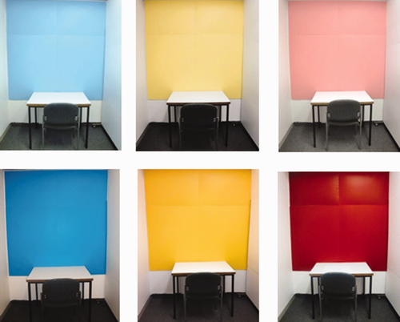
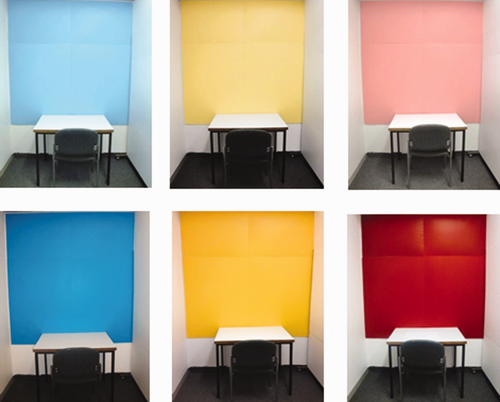
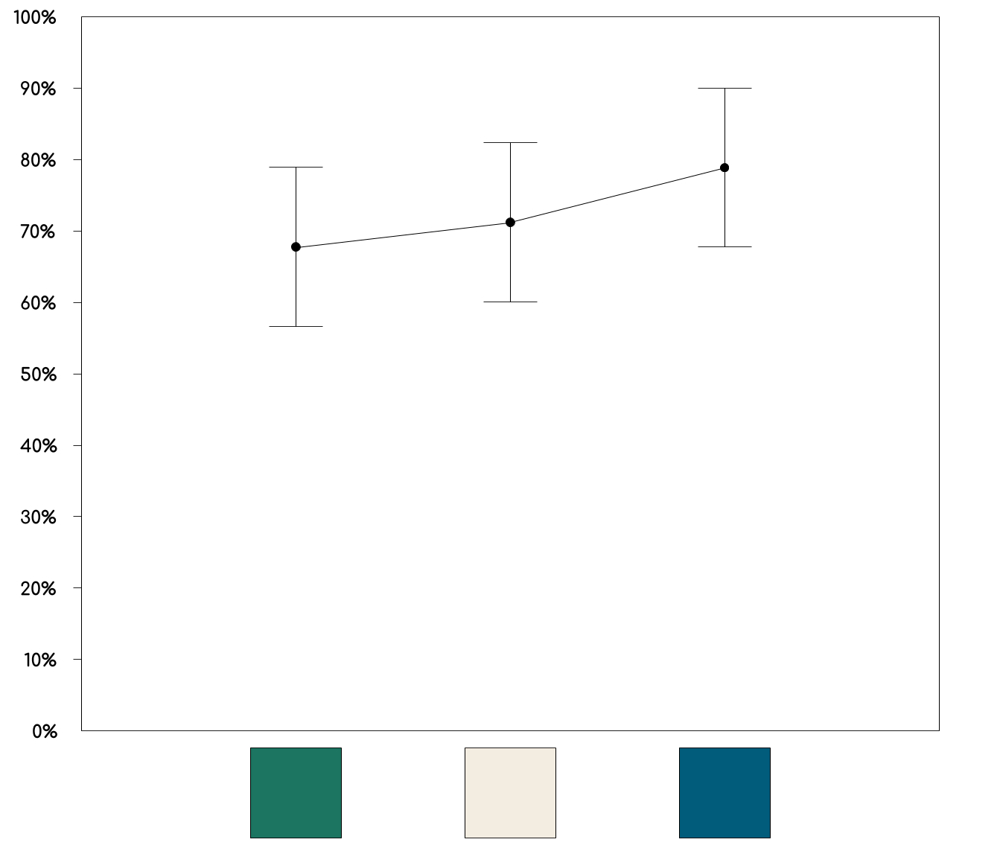
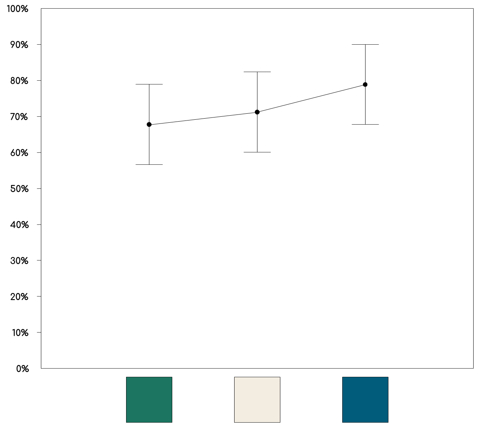
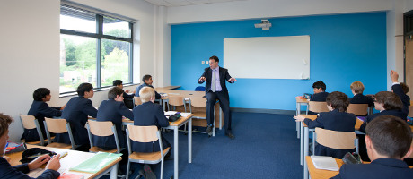
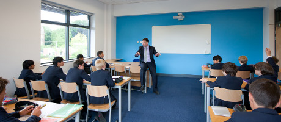

The Effects of Room Colour on Students’ Performance
Ahmed Elshafei Fatma Samy Sara Sidky Youssef Tawfik
s-ahmed.elshafei@zewailcity.edu.eg s-fatmasamy@zewailcity.edu.eg s-sarasedky@zewailcity.edu.eg s-youssef.tawfik@zewailcity.edu.eg
Keywords: Colour Psychology Room Colour Student Performance Hue
Introduction
Colour can stimulate different emotions, enhance or hinder concentration and affect performance both positively and negatively. We present our research on comparing the effects of three common wall colours (dark blue, dark green and white) on undergraduate University students. Al-Ayash et al. attempted to find a correlation between exposure to coloured environments and reading comprehension, heart rate, and emotional response. The study found no significant relationship between hue and reading comprehension. We believe this to be due to errors in their experimental design. When it came to selecting the colour samples, the hues they selected were not of the sort typically utilized in real-life learning environments.Figure 1: Environments used in Ayash et al.
Added to this is the short exposure time the participants experienced in the colored environments. This collection of faults caused their assessments to fail to provide accurate representation of real learning environments. Aoki et al. and Read faced similar limitations caused by using synthetic scenarios to test for the effects of colour. Jin et al. communicated expert consensus recommending increasing exposure duration to detect the long term effects that colour can have more accurately.
Colour can stimulate different emotions, enhance or hinder concentration and affect performance both positively and negatively. We present our research on comparing the effects of three common wall colours (dark blue, dark green and white) on undergraduate University students. Al-Ayash et al. attempted to find a correlation between exposure to coloured environments and reading comprehension, heart rate, and emotional response. The study found no significant relationship between hue and reading comprehension. We believe this to be due to errors in their experimental design. When it came to selecting the colour samples, the hues they selected were not of the sort typically utilized in real-life learning environments.Figure 1: Environments used in Ayash et al.
Added to this is the short exposure time the participants experienced in the colored environments. This collection of faults caused their assessments to fail to provide accurate representation of real learning environments. Aoki et al. and Read faced similar limitations caused by using synthetic scenarios to test for the effects of colour. Jin et al. communicated expert consensus recommending increasing exposure duration to detect the long term effects that colour can have more accurately.
Methods
• Subjects will be 150 students of the University of Science and Technology.
• They will be split into 6 groups according to a stratified selection process. Specifically, students will be ordered according to GPA and distributed among the different groups ensuring the same grade distribution within each group.
• Each of the six groups will go through the entirety of their semester taking lectures in their assigned rooms only.
• All students will be registered to the same courses, and taught by the same professors.
• Each group of students will be assigned to rooms of a specific colour, 2 groups for each colour.
• The PANAS test will be administered 4 times during the experiment before students’ exams to evaluate resulting positive and negative effect.
• SPSS software will be used to analyse students’ scores in all exams and overall GPA.
Figure 2: Assessment follows a cyclical pattern.
• Subjects will be 150 students of the University of Science and Technology.
• They will be split into 6 groups according to a stratified selection process. Specifically, students will be ordered according to GPA and distributed among the different groups ensuring the same grade distribution within each group.
• Each of the six groups will go through the entirety of their semester taking lectures in their assigned rooms only.
• All students will be registered to the same courses, and taught by the same professors.
• Each group of students will be assigned to rooms of a specific colour, 2 groups for each colour.
• The PANAS test will be administered 4 times during the experiment before students’ exams to evaluate resulting positive and negative effect.
• SPSS software will be used to analyse students’ scores in all exams and overall GPA.
Figure 2: Assessment follows a cyclical pattern.
Data Analysis and Expected Results
Based on our review of the literature, we can infer probable general tendencies in our results.
• We expect the color green to have a small, but still significant, negative effect of performance.
• We expect the color white to have little to no effect on performance.
• We expect the color blue to have a moderate positive effect on performance.
 Figure 3: Graph of expected results.
Our data analysis tool of choice is the SPSS package.
Statistical analysis will prove crucial in revealing relationships between variables and results that are not immediately obvious. Another major use for statistical analysis tools is the determination of the significance of apparent relationships.
It also factors into our experimental design, and is the reason for having two groups for each colour. This is to gauge if two groups of the same colour deviate.
Based on our review of the literature, we can infer probable general tendencies in our results.
• We expect the color green to have a small, but still significant, negative effect of performance.
• We expect the color white to have little to no effect on performance.
• We expect the color blue to have a moderate positive effect on performance.
 Figure 3: Graph of expected results.
Our data analysis tool of choice is the SPSS package.
Statistical analysis will prove crucial in revealing relationships between variables and results that are not immediately obvious. Another major use for statistical analysis tools is the determination of the significance of apparent relationships.
It also factors into our experimental design, and is the reason for having two groups for each colour. This is to gauge if two groups of the same colour deviate.
Conclusion
The mere element of colour can have significant impacts on University student’s performance in both negative and positive ways. Based on expected results, the colour blue should be employed more often within Universities’ premises. Figure 4: A model classroom. Courtesy: BHM Architects Ltd.
More research should be carried out within this dynamic field, exploring the effects of more hues and their different combinations. The use of FMRI scanning could have provided better insight into brain activity and response to prolonged exposure to specific colour. However, due to financial constraints, it cannot be used within the context of this experiment. Another limitation includes limiting the sample to only one university major. It is recommended to conduct this experiment with other hues and internal design elements such as lighting.
The mere element of colour can have significant impacts on University student’s performance in both negative and positive ways. Based on expected results, the colour blue should be employed more often within Universities’ premises. Figure 4: A model classroom. Courtesy: BHM Architects Ltd.
More research should be carried out within this dynamic field, exploring the effects of more hues and their different combinations. The use of FMRI scanning could have provided better insight into brain activity and response to prolonged exposure to specific colour. However, due to financial constraints, it cannot be used within the context of this experiment. Another limitation includes limiting the sample to only one university major. It is recommended to conduct this experiment with other hues and internal design elements such as lighting.
References
[1] A. Al Ayash. “The influence of color on student emotion, heart rate, and performance in learning environments,” Colour Research and amp; Application, vol. 41, no. 2. 2015.
[2] R. Aoki et al. “Relationship of Negative Mood with Prefrontal Cortex Activity during Working Memory Tasks: An Optical Topography Study” Neuroscience Research, In Press, Corrected Proof, vol. 70, no.2, pp. 189-96. 2011.
[3] M.A Read. “Contemplating Design: Listening to Children’s Preferences about Classroom Design,” Journal of Creative Education, vol. 2, pp. 75-80, 2010.
[4] H.R Jin et al. “Study on Physiological Responses to Color Stimulation - Focused on User Centered Design Sensibility Engineering Design of Color,” 2005.
[5] N.A. Jalil, R.M. Yunus and N.S. Said. “Environmental Colour Impact upon Human Behaviour: A Review,” Procedia - Social and Behavioral Sciences, vol. 35, pp. 54 – 62, 2011.
[1] A. Al Ayash. “The influence of color on student emotion, heart rate, and performance in learning environments,” Colour Research and amp; Application, vol. 41, no. 2. 2015.
[2] R. Aoki et al. “Relationship of Negative Mood with Prefrontal Cortex Activity during Working Memory Tasks: An Optical Topography Study” Neuroscience Research, In Press, Corrected Proof, vol. 70, no.2, pp. 189-96. 2011.
[3] M.A Read. “Contemplating Design: Listening to Children’s Preferences about Classroom Design,” Journal of Creative Education, vol. 2, pp. 75-80, 2010.
[4] H.R Jin et al. “Study on Physiological Responses to Color Stimulation - Focused on User Centered Design Sensibility Engineering Design of Color,” 2005.
[5] N.A. Jalil, R.M. Yunus and N.S. Said. “Environmental Colour Impact upon Human Behaviour: A Review,” Procedia - Social and Behavioral Sciences, vol. 35, pp. 54 – 62, 2011.